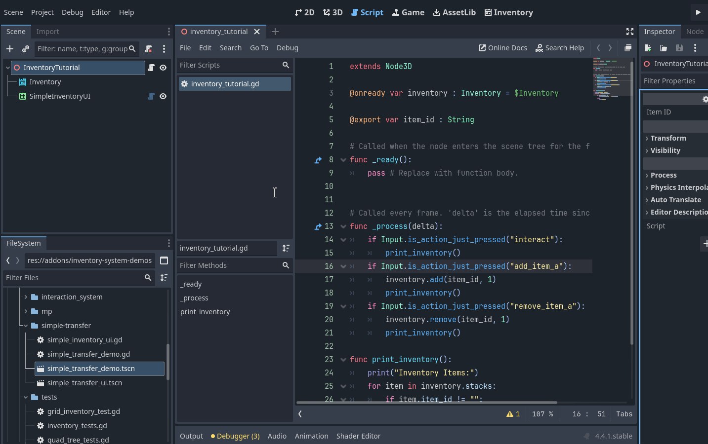
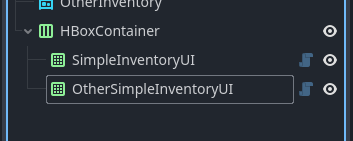
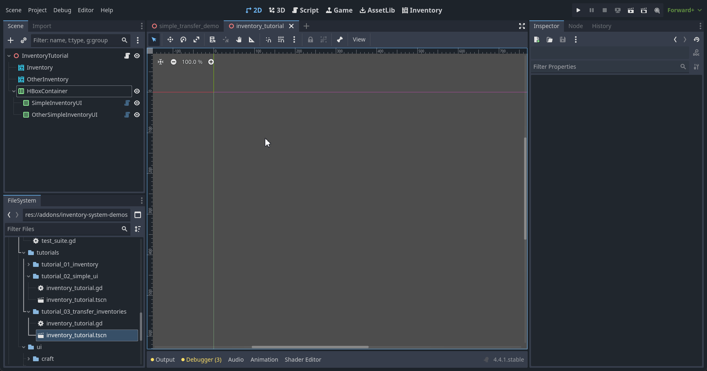
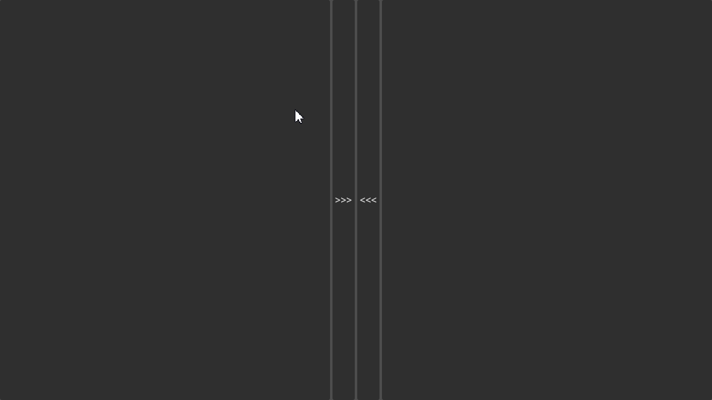

Operation between inventories
Many times we will want to transfer items between inventories, for this we have the function class_inventory.transfer which allows us to transfer items between inventories. This guide will show you how to do this in a simple way.
Note
This guide assumes you have already created a database and an inventory, if you haven’t done so, please see Creating a Database and Add items to Inventory guide.
Change scene structure
Add new second inventory and second simple inventory ui in scene:
Link database with second inventory and second inventory to the second simple inventory ui:

Let’s organize UI, add a new HBoxContainer node and move the two UI nodes inside this new UI node.
Now set the anchor preset to full rect of the HBoxContainer and for the children set it to expand horizontally
Now add two more buttons, place them between the inventories, each one will be triggered to move from one inventory to the other.

Add Transfer Logic
Now with the scene setup complete, let’s start working with the codes, go back to the script inventory_tutorial placed in the root node of the scene. Add the missing inventory reference to the script and Inventory UI nodes, your code should look like this:
@onready var inventory : Inventory = $Inventory
@onready var other_inventory: Inventory = $OtherInventory
@onready var simple_inventory_ui: SimpleInventoryUI = $HBoxContainer/SimpleInventoryUI
@onready var other_simple_inventory_ui: SimpleInventoryUI = $HBoxContainer/OtherSimpleInventoryUI
Now add the added buttons down signals to inventory_tutorial script:

With this you add two new functions to the script:
func _on_button_left_button_down() -> void:
pass # Replace with function body.
func _on_button_right_button_down() -> void:
pass # Replace with function body.
Fill the new functions with this code, each function will identify the selected item from each inventory and move it to another inventory with the method transfer:
func _on_button_left_button_down() -> void:
var selected_items: Array[int] = simple_inventory_ui.get_selected_inventory_items()
if selected_items.is_empty():
return
for selected_item_index in selected_items:
inventory.transfer(selected_item_index, other_inventory)
func _on_button_right_button_down() -> void:
var selected_items: Array[int] = other_simple_inventory_ui.get_selected_inventory_items()
if selected_items.is_empty():
return
for selected_item_index in selected_items:
other_inventory.transfer(selected_item_index, inventory)
Now just run and test with the :guilabe:`&F1` key to add the item, and test moving between one inventory and another.
It’s amazing that you can use the full transfer power of the inventory. This function internalizes several operations such as adding, removing, checking available stacks. You can check available parameters, such as changing the transfer to:
other_inventory.transfer(selected_item_index, inventory, 4).
Putting a number at the end specifies the quantity you want to move.
See also
See more about it in the Inventory API and also in the Inventories manual.